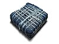

indigo

Has synonym(s): C.I. Vat Blue 1
Definition: Indigo dye is an organic compound with a distinctive blue color. Indigo is a natural dye extracted from the leaves of some plants of the Indigofera genus, in particular Indigofera tinctoria; dye-bearing Indigofera plants were commonly grown and used throughout the world, in Asia in particular, as an important crop, with the production of indigo dyestuff economically important due to the historical rarity of other blue dyestuffs Most indigo dye produced today is synthetic, constituting several thousand tons each year. It is most commonly associated with the production of denim cloth and blue jeans, where its properties allow for effects such as stone washing and acid washing to be applied quickly.
Source: Wikipedia
Wikipedia Page (Something wrong with this association? Let us know.)
Wikidata Page (Something wrong with this association? Let us know.)